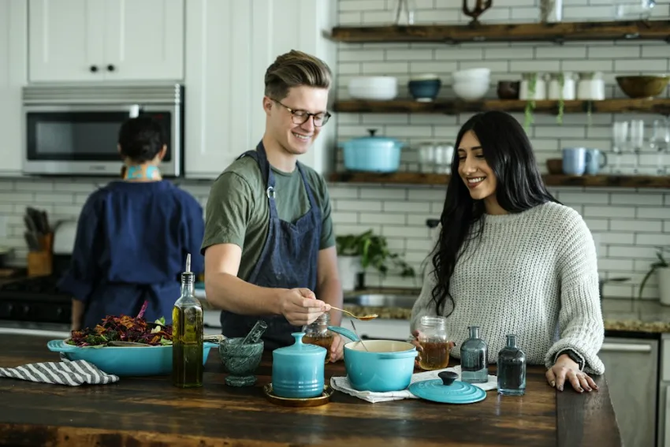
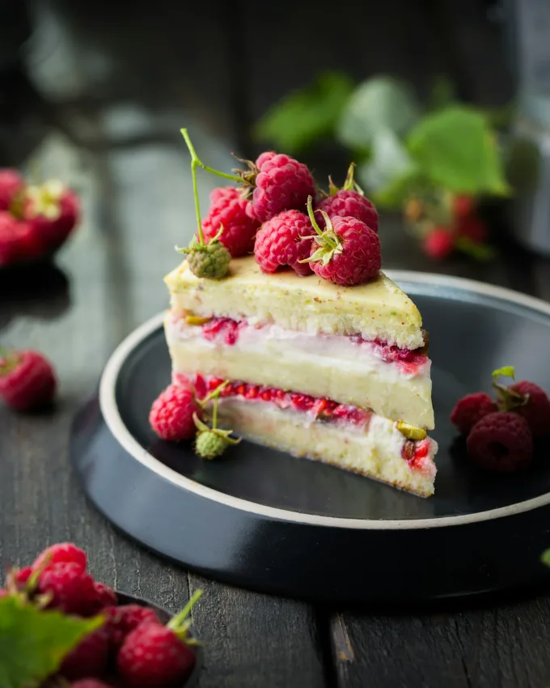
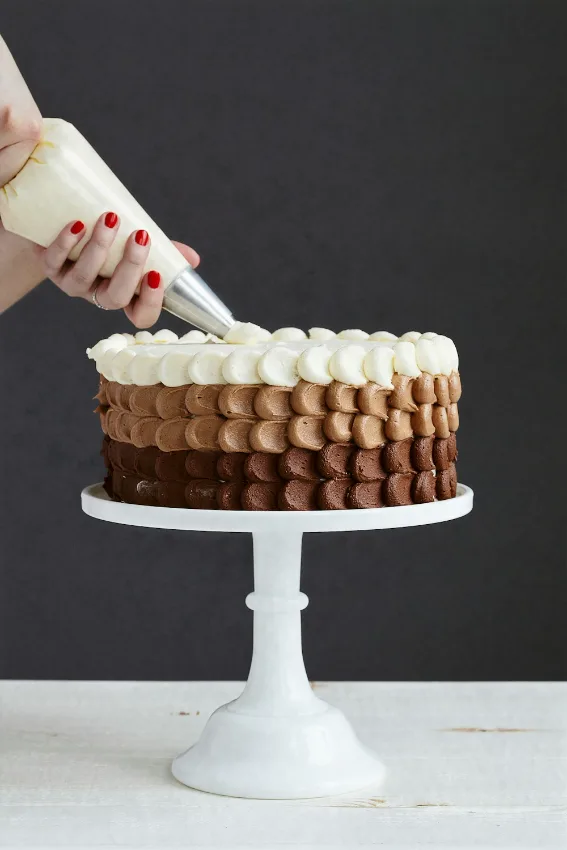
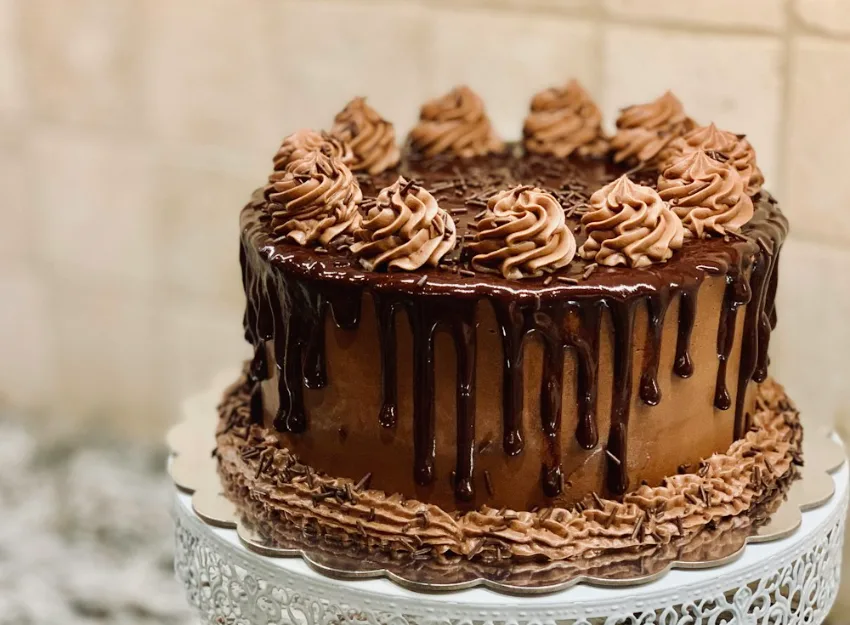
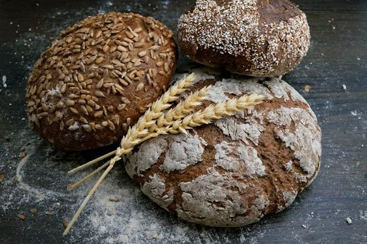
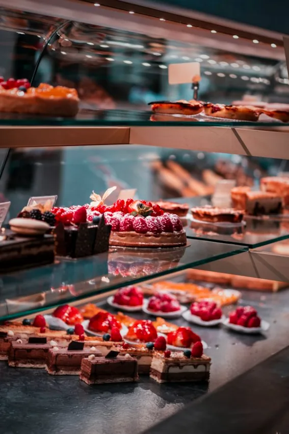
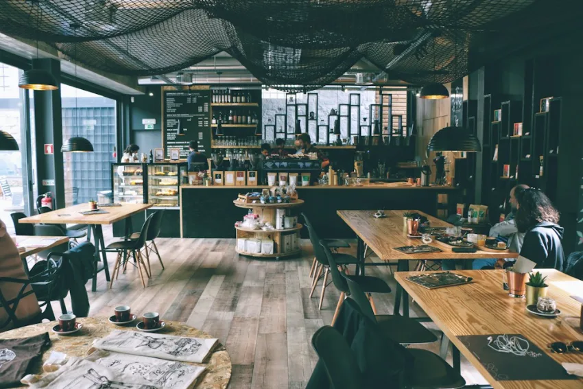

BESTSELLER

Traditional Butter Croissant
81 layers of flaky laminated French butter dough
Slow-fermented for 72 unhurried hours. Experience the crackle of blistered crusts, buttery 81-layer viennoiserie, and wild French flours baked before dawn in our stone hearth.
81 layers of flaky laminated French butter dough

Naturally leavened crunchy blistered crust

Warm spices with bourbon vanilla bean glaze

Double Valrhona 64% bittersweet chocolate folds
Great bread cannot be rushed. Every loaf and viennoiserie takes three days of patience, wild levain, and French stone-hearth heat.
Our 10-year-old living sourdough mother is nurtured with organic whole rye and filtered spring water to peak bubbly fermentation.
Chilled dough is folded by hand with cold Normandy cultured butter in 3 precision turns, creating 81 microscopic buttery pockets.
Shaped boules and pastries rest in proofing baskets for 24 hours at 4°C, letting lactic acid break down gluten and unlock deep flavor.
Injected with live steam at 240°C on refractory stone plates. Crusts blister golden, crumb springs open, and the aroma fills the street.

We wake up at 3:30 AM so you can start your day with the comforting aroma of browned butter and warm crusts. Every loaf and pastry here is shaped by genuine human hands with unhurried care.
From our family to your table, we believe real baking starts with locally milled heritage grains, natural wild starters, and patient cold fermentation. Zero preservatives, zero additives, and no shortcuts.
“Real bread takes time, honest flour, and genuine care.”
Handcrafted with respect for time-honored artisanal traditions.
100% certified organic stone-ground flours, pure pasture-raised butter, and unrefined gray sea salt. Zero artificial flavors or chemical enhancers.
Our wild sourdough starters undergo up to 72 hours of slow cold proofing, producing rich flavor, a crisp caramelized crust, and natural easy digestibility.
Pulled straight from our stone hearth ovens in small batches starting before dawn, ensuring you always experience peak warmth and crispness.
No preservatives, no chemical dough conditioners, no industrial yeast blends. We only partner with generational family mills and certified organic farms.
100% Organic
Milled slowly on volcanic granite stones to protect the live germ, natural vitamin E, and rustic golden bran.
AOP Certified
Slowly cultured from grass-fed pasture milk with 84% butterfat. Imparts our signature nutty aroma and golden flake.
 Live Culture
Live Culture
Born from whole rye and natural ambient yeasts, fed twice daily with fresh spring water for unmatched complex acidity.

Direct TradeEthically sourced Grand Cru French chocolate batons and sun-ripened berries delivered weekly from nearby family orchards.
Hand-crafted summer raspberry & pistachio tart with wild organic berries, velvety roasted pistachio frangipane cream, nestled inside a buttery sablé pastry shell.

“The Country Sourdough has the most phenomenal crust I’ve tasted outside of Paris. Crisp, airy, sour, and stays fresh for days. We drive 20 minutes every Saturday.”

From bespoke birthday gateaux layered with wild raspberries to morning pastry crates for your studio team, our bakers craft custom orders with the same organic devotion.
Double Valrhona chocolate drip cakes, raspberry pistachio frangipane, and light lemon mascarpone layered cakes.
Custom assortment crates of 12, 24, or 48 warm butter croissants, chocolate folds, and cinnamon brioche swirls.
Naturally leavened sourdoughs, vegan brioches, and refined-sugar-free whole berry tarts upon request.




Why rushing dough is the biggest mistake in modern breadmaking and how cold proofing unlocks digestible nutrition and deep caramel notes.
Read story →From floral Ethiopian pour-overs paired with butter croissants to dark roast macchiatos matching chocolate babka.
Read story →
450°F stone hearth ovens, pre-dawn quiet, and the ritual of hand-dusting flours before Brooklyn awakens.
Read story →From keeping sourdough crispy at home to ingredients and same-day counter hold, here are answers from our baking team.
Keep your sourdough cut-side down on a wooden cutting board or inside a breathable linen bread bag. Never store artisan bread in plastic or the refrigerator, which draws out moisture and softens the crust. To revive a day-old loaf, sprinkle a few drops of water on the crust and reheat in a 180°C (350°F) oven for 6–8 minutes—it will taste like it was just pulled from our stone deck!
During our 72-hour cold proof, beneficial wild lactobacilli bacteria and live cultures break down tough gluten proteins and neutralize phytic acid. This natural enzymatic pre-digestion transforms heavy starches into absorbable nutrients, making our bread gentle on sensitive stomachs.
Yes! You can reserve your pastries and boules directly through our online menu for same-day counter pickup. Morning batch slots fill quickly, so we recommend placing orders before 8:00 AM or the evening prior for weekend morning boxes.
Always! We exclusively use 84% butterfat AOP Beurre Charentes-Poitou from Normandy. We never use margarine, shortening, palm oils, or artificial flavorings. That rich, golden flakiness and fragrant aroma comes solely from slow-churned European grass-fed butter.
We deliver fresh morning pastry crates and warm bread within a 6-mile radius of our Brooklyn storefront. Free delivery is automatically applied to all orders over $35.00! Delivery routes depart at 7:30 AM and 10:00 AM daily.
Our head baker and hospitality team are happy to answer any questions about flours, allergens, or custom batch orders.

Step inside our neighborhood kitchen. The smell of warm cinnamon, browned butter, and freshly pulled espresso welcomes you every morning.